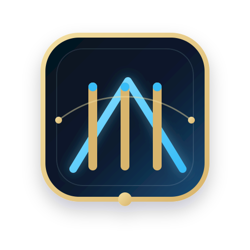
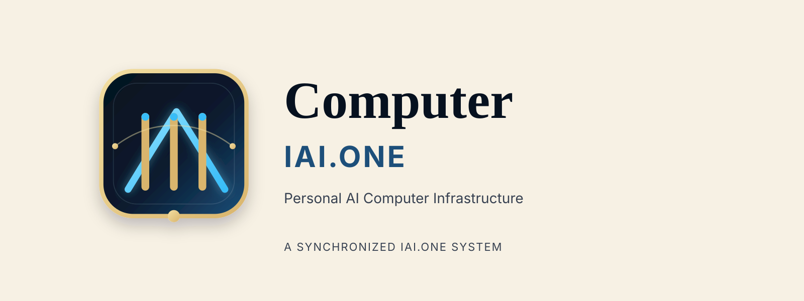
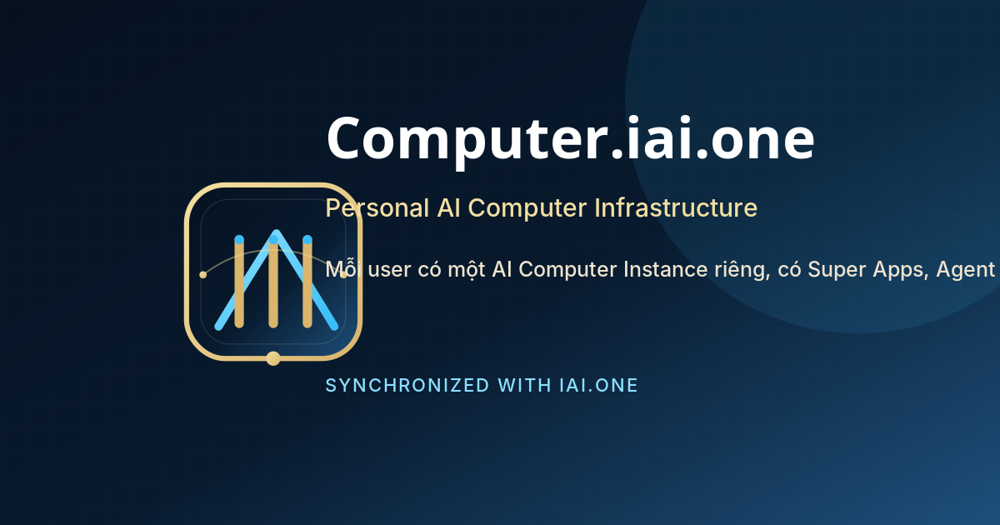
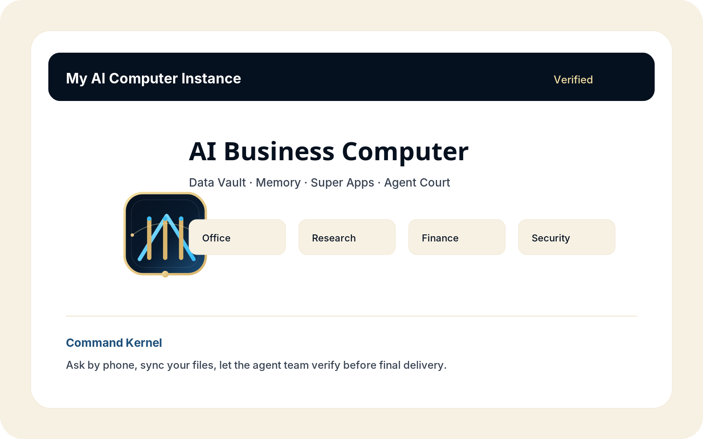

Computer.iai.one Brand System
Global Self-Upgrading Personal AI Computer Infrastructure.

Primary Mark

Horizontal Lockup

OG Image

Global Self-Upgrading Personal AI Computer Infrastructure.



